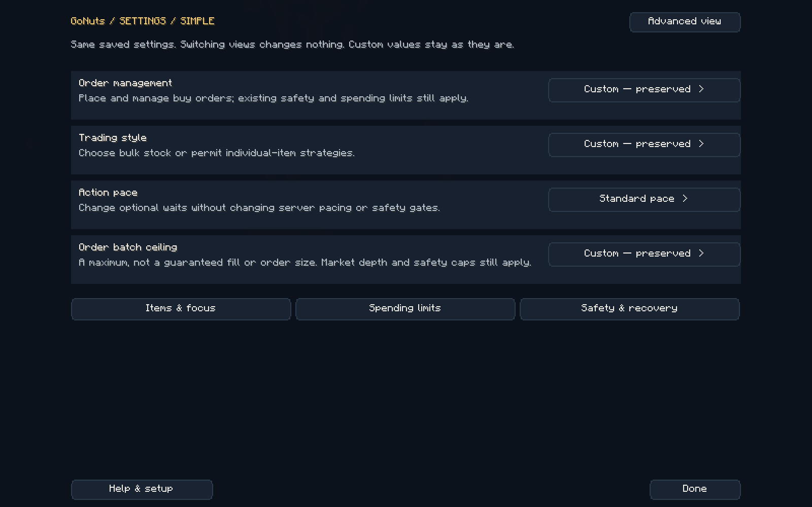
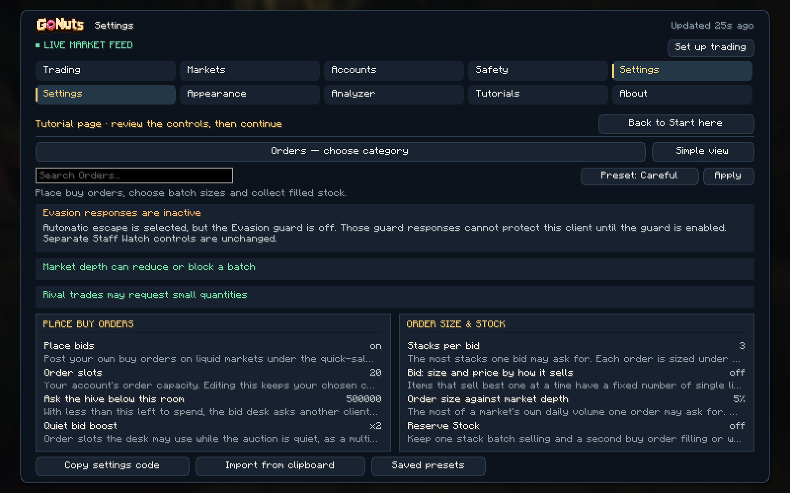
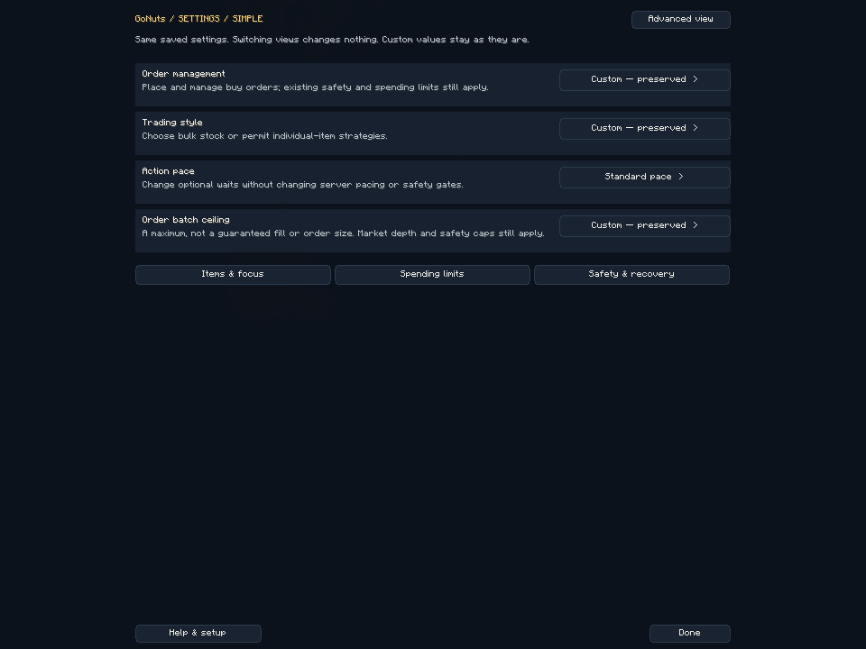

CURRENT UI
Fewer controls when you want them. Every detail when you need it.
Press B, then Settings. Simple and Advanced show the same saved configuration. Opening either view never changes your settings, positions, inventory or safety gates.
Simple: four core controls

| Control | What it changes | What to expect |
|---|---|---|
| Order management | Managed orders groups reading, bidding, collection, whole-stack collection and chasing. No new bids switches bidding off. | Prices, spending caps and delivery rules remain in control. |
| Trading style | Whole stacks disables single-item listing and Underdog strategies and enables sale-based sizing. Mixed lots permits those strategies. | A strategy preference does not guarantee that every auction purchase or fill is a whole stack. |
| Action pace | Standard or Fast changes optional waits through the existing fast/human-step controls. | Numeric timing ranges, server pacing and safety gates stay intact. |
| Order batch ceiling | Choose an upper bound of 4, 8 or 16 stacks per bid. | A maximum, not a promised order size, fill speed or profit. Native quantity recognition, market depth and spending limits can reduce the actual order. |
Custom — preserved means your existing individual values do not exactly match a bundled option. They stay unchanged until you deliberately choose an option and apply its preview.
- Select a grouped option.
- Read the exact before/after changes and consequences.
- Choose Apply to save those changes, or Cancel to keep everything. If settings changed elsewhere, reopen the preview.
Advanced: organized individual controls
Choose Advanced view. Use the category selector or search instead of scrolling through every setting. Categories are Auction, Orders, Items & focus, Money & limits, Safety & recovery, Hive & sharing, Display & alerts, Session & data, and All settings.

The main client has five workspaces. Trading holds Dashboard, Trade, Auction, Orders, Items, Flips and Stats. Markets holds discovery and rival information. Accounts holds Swarm, Hive setup, proxies and payroll. Safety holds Evasion, Staff Watch, Region Map and diagnostics. Settings holds configuration, appearance, Analyzer, Tutorials and About.
Understand what a setting will do
Warnings explain interactions in the game, local browser panel and hosted panel. Their setting links take you to the relevant control. They do not override native execution gates.
- Trading focus enabled with an empty item list means no new purchases qualify.
- Turning off new bids prevents new orders even if slots remain available.
- Depth, history, reserve-stock and spending limits can restrict a large requested batch.
- The existing 999-item recognition limit allows at most 15 complete stacks for ordinary 64-item bids, even with a 16-stack ceiling.
- Whole-stack collection can wait while a partially filled order has less than a complete stack available.
- Invalid minimum/maximum timing ranges need correction; faster preferences do not bypass safety checks.
Use the consequence shown for your actual configuration. A warning is neither proof of a defect nor a promise of increased profit.
One account or the whole Hive
In Money and Orders, select an account to show only its records. Choose All accounts for the combined Hive. Account names accompany own-order rows. Missing, old or unreadable observations stay unknown; the host's data is never substituted for another account.
Money combines auction results with unfilled-order counts, funds committed to unfilled orders, delivered goods awaiting collection and observed fully filled orders in the last hour and 24 hours. These buckets are separate: committed funds and goods awaiting collection are not auction asking revenue or realized profit.
A fully filled order means the requested items were delivered, not that they were sold. Completion history starts with this update and counts observed partial-to-full transitions or known new placements becoming full. It does not reconstruct completions missed while offline or assign completion times to old full orders. Repeated reads and normal restarts do not count the same completion again.
Whole-Hive auction capacity sums each account's own reported limit. Three accounts with 90 slots each total 270, not 90. If an account's capacity is unavailable, the report marks a partial total and does not draw a misleading complete capacity grid. Order snapshots are refreshed through the existing local reporting cadence; the panel identifies freshness and partial coverage.
Scaling and headless use
The in-game screens fit their own layout independently of Minecraft GUI scale. Compact windows keep the controls inside the visible area. Local and hosted panels share the Simple/Advanced settings and consequence checks, so a headless client does not need a game window to edit them. The Money and Orders account selector changes the reporting view. To edit settings for a different client, open that client's own panel; a reporting selection does not redirect settings writes.

Setup, tutorials and bug reports
Reopen setup through B → Settings → Help & setup, then Set up trading. Advanced view exposes Tutorials and About → Report bug. The refreshed install video, Hive walkthrough and Discord walkthrough use the current interface.
Current clients send sanitized private diagnostic history for up to 24 hours independently of Swarm participation. Recent report evidence and private history give context; coverage gaps remain explicit. Public automatic issue filing is a separate opt-in. Never delete your configuration, order records or ledger to prepare a report.